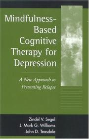

《抑郁症的正念认知疗法》
书·Zindel V. Segal, J. Mark G. Williams, John D. Teasdale, 2002·Mindfulness-Based Cognitive Therapy for Depression

正念认知疗法的创始人手册，用八周课程预防抑郁复发。
- 作者
- Zindel V. Segal, J. Mark G. Williams, John D. Teasdale
- 年份
- 2002
- 难度
- 深读
- 类型
- 实践
- 所属学派
- 第三浪潮
- 核心理论
- 正念认知疗法
版本
- 中文版 《抑郁症的正念认知疗法》 Zindel V. Segal / J. Mark G. Williams / John D. Teasdale · 余红玉 译 · 世界图书出版公司 · 2017 豆瓣 8.5 分（201 人评价） 豆瓣页面 ↗
- 英文版 Mindfulness-Based Cognitive Therapy for Depression Zindel V. Segal, J. Mark G. Williams, John D. Teasdale · Second edition, Guilford Press · 2013 Open Library ↗